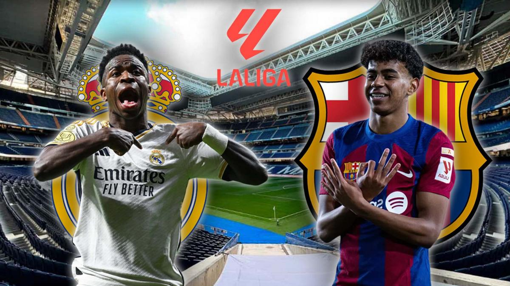
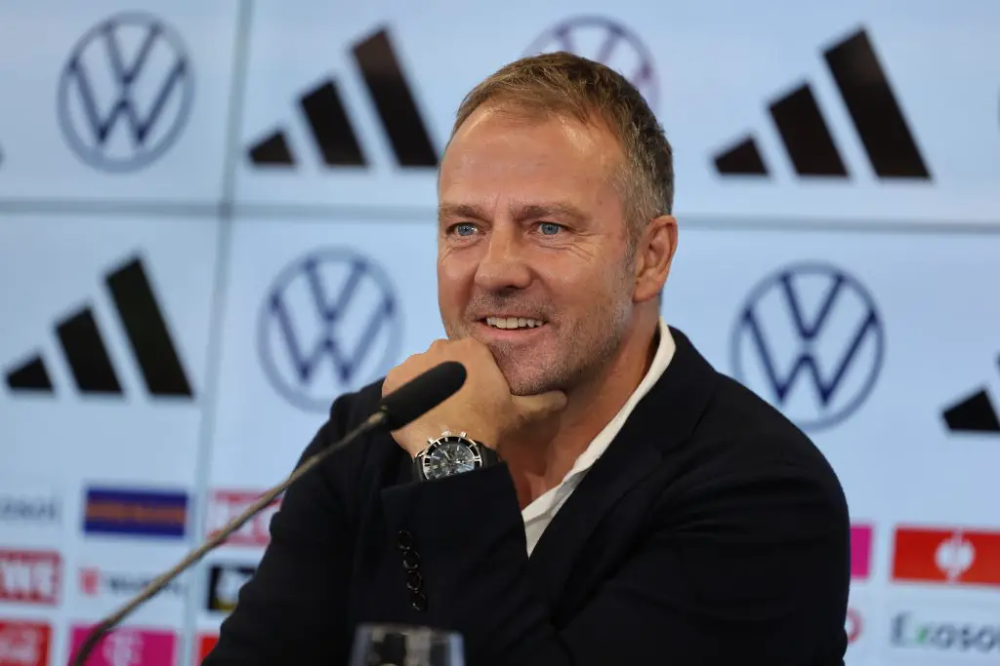
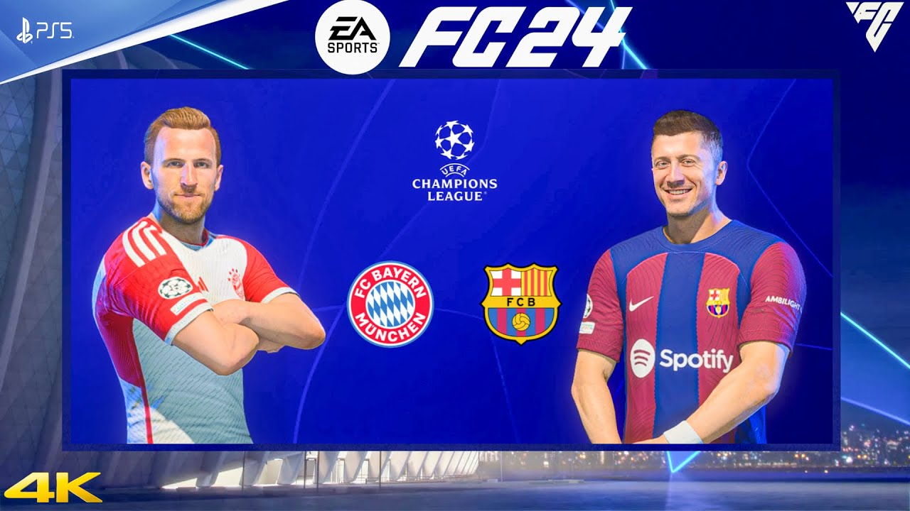
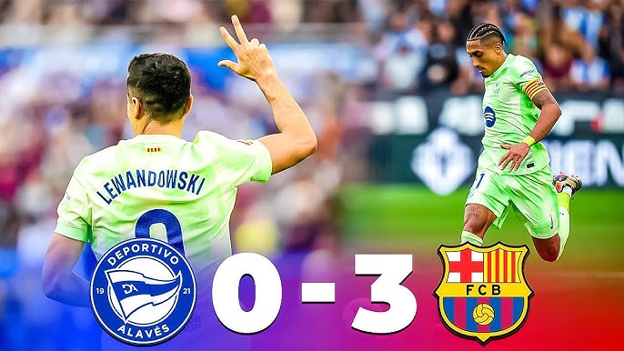
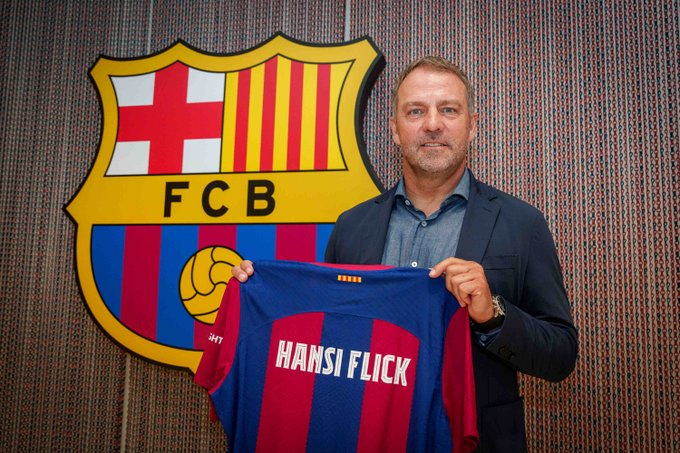

Événements
Événements à venir
-
Clasico : FC Barcelona vs Real Madrid
Date : 26 octobre 2024
Le grand choc du football espagnol, connu sous le nom de "Clasico", aura lieu le 25 octobre 2024. Le FC Barcelona, désormais dirigé par Hansi Flick, accueillera son rival éternel, le Real Madrid, pour un match à haute tension au Camp Nou. Ce match est crucial pour les deux équipes dans leur quête du titre de la Liga.
 -
Conférence de presse pré-Clasico
Date : 25 octobre 2024
Le coach Hansi Flick tiendra sa première conférence de presse pour discuter des préparatifs, des stratégies et de l'importance du Clasico à venir contre le Real Madrid. Les fans attendent avec impatience de voir comment Hansi Flick ajustera l'équipe pour ce grand événement.
 -
Match de Ligue des Champions : FC Barcelona vs Bayern Munich
Date : 6 novembre 2024
Le FC Barcelona de Hansi Flick se déplacera en Allemagne pour affronter son ancien club, le Bayern Munich, dans le cadre de la phase de groupes de la Ligue des Champions 2024-2025. Ce match est crucial pour assurer une place en huitièmes de finale.

Événements récents
-
Trêve internationale : Performances des joueurs du Barça
Date : Octobre 2024
Durant la trêve internationale d'octobre 2024, certains joueurs du FC Barcelona ont été appelés pour jouer avec leurs sélections nationales. Cependant, il y a eu des absences importantes :
- Lamine Yamal : Bien qu'il ait joué avec l'Espagne, il n'a pas marqué lors de son dernier match.
- Robert Lewandowski : N'a pas marqué lors du match contre le Portugal avec la Pologne.
- Frenkie de Jong : Absent de la sélection néerlandaise, car il revient d'une longue blessure.
-
Victoire contre Deportivo Alaves (3-0)
Date : 8 octobre 2024
Le FC Barcelona, sous la direction d'Hansi Flick, a remporté une victoire éclatante contre Deportivo Alaves avec un score de 3-0. Tous les buts ont été marqués par Robert Lewandowski, montrant sa forme exceptionnelle avant la trêve internationale.
 -
Présentation du nouvel entraîneur : Hansi Flick
Date : 1er septembre 2024
Le FC Barcelona a officiellement présenté Hansi Flick en tant que nouvel entraîneur pour la saison 2024-2025. L'entraîneur allemand, ancien sélectionneur de l'équipe nationale allemande, a pris les commandes de l'équipe avec l'ambition de ramener le club au sommet des compétitions nationales et européennes.
